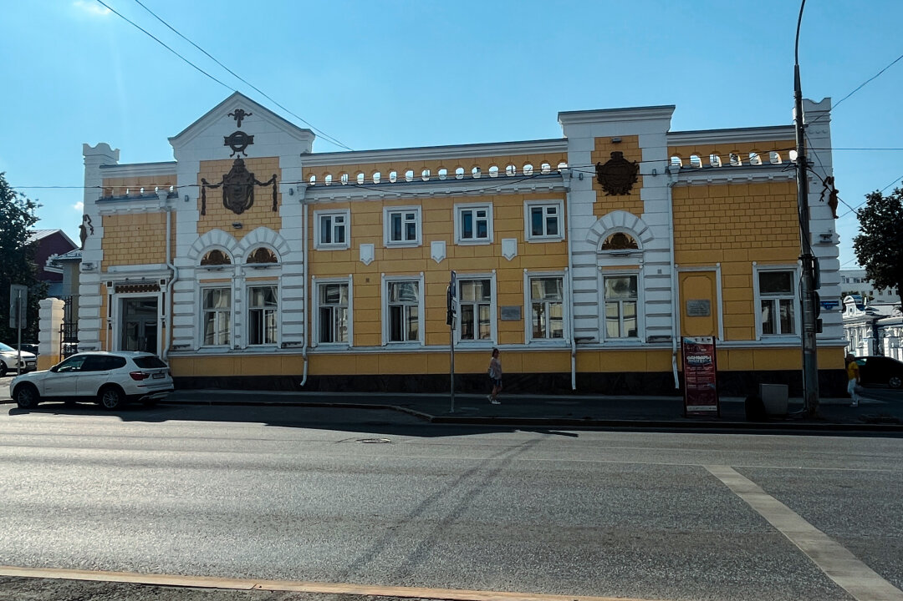

9. Дом губернатора
Пермь, улица Сибирская, 27, угол Екатерининской улицы · Найти на Яндекс Картах

История места
Дом на пересечении Сибирской и Екатерининской улиц построили в конце XVIII века. Первоначально он принадлежал Ивану Прянишникову, служащему Пермского наместничества.
Позднейшая история здания связана с губернской властью. На этой остановке можно обсудить, почему превращение поселения в административный центр требовало новых учреждений и меняло устройство города.
Значение для Перми и России
Дом позволяет раскрыть административную сторону создания Перми. История местной власти связывает город с системой управления территориями Российской империи.